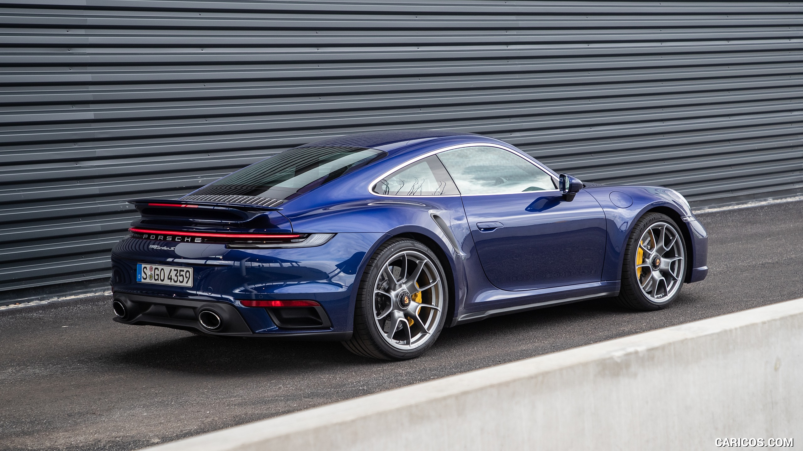
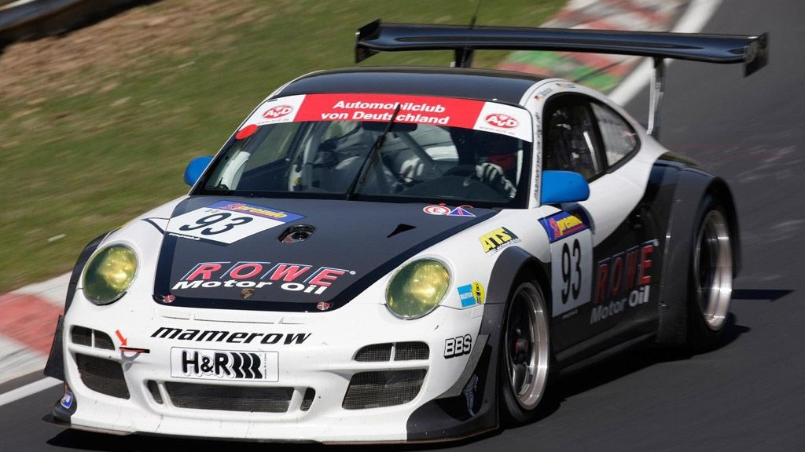

BMW G05/G18 — четвёртое поколение знаменитого среднеразмерного кроссовера BMW X5 немецкой компании BMW. Выпуск модели был начат в ноябре 2018 года в Европе. Одновременно с запуском новой модели с производства была снята предыдущая — F15.


Официально BMW X5 четвёртого поколения был запущен в производство 6 июня 2018 года на платформе CLAR. Почти во всём мире автомобиль производится с полноприводной компоновкой xDrive, тогда как в США автомобиль производится с заднеприводной компоновкой sDrive. Во всех странах, кроме Европы, производится модель xDrive50i, тогда как в Европу поставляется модель M50i, которая в 2020 году в Северной Америке вытеснила с конвейера модель xDrive50i. С августа 2019 года производится армейский вариант X5 Protection VR6, способный выстоять стрельбу из АК-47. С марта 2023 года производится X5 LCI, рестайлинговая версия.
В Китае с апреля 2022 года производятся модели G18 X5 xDrive30Li и xDrive40Li с колёсной базой, удлинённой до 3105 мм, и длиной, увеличенной до 5060 мм.

| Модель | Турбонаддув | Мощность | Крутящий момент | Разгон до 100 |
| X5 xDrive30i | BMW B48 | 195 кВт (265 л. с.) при 5000—6000 об/мин | 400 Н*м при 1550—4500 об/мин | 6,9 сек. |
| X5 xDrive40i | BMW B58[ | 245 кВт (333 л. с.) при 5500—6250 об/мин | 450 Н*м при 1600—4800 об/мин | 5,7 сек. |
| X5 M Competition | BMW S63 (V8) | 460 кВт (625 л. с.) при 6000-6600 об/мин | 750 Н*м при 1800—5860 об/мин | 3,8 сек. |
Porsche 911 (нем. Neunelfer) — общее название семейства спортивных автомобилей и автомобилей категории GT, выпускающихся немецкой компанией Porsche AG с 1965 года по настоящее время. Поколения семейства принято разделять на Porsche 911 Classic, выпускавшихся в 1964-1989 годах, и автомобили нового поколения, сохранивших с семейством Classic лишь общую компоновку и внешнюю стилистику. Общими для всех автомобилей являются неизменные типы кузовов: двухдверное, двухместное (2+2) купе для основной модели и кабриолет, та́рга неотъемлемо присутствующие в модельной линейке Porsche с 1967 года по настоящее время (2024 год). Начиная с второго поколения, каждое поколение автомобилей выпускается с собственным трехзначным индексом, который с четвертого поколения может рассматриваться как самостоятельная модель автомобиля. Но все модели при этом носят общее название Porsche 911, которое таким образом, стало торговой маркой. Отличительной особенностью конструкции является заднемоторная компоновка с шестицилиндровым оппозитным двигателем воздушного охлаждения. Подобная компоновка была достаточно распространенной на момент создания, но в основном это были малолитражные автомобили. Продуманность конструкции модели 911 позволила довести мощность двигателей до 400 л.с. при достаточном ресурсе. Но с 1996 года применяются моторы уже с водяным охлаждением.
 Автомобиль на протяжении своей истории имел много гоночных модификаций для кольцевых гонок и ралли. В различные годы машины в основном частных команд выигрывали в абсолютном зачёте этапы чемпионата мира по ралли, гонку «Тарга Флорио», и такие кольцевые гонки, как «24 часа Дайтоны», «12 часов Себринга», «24 часа Нюрбургринга».